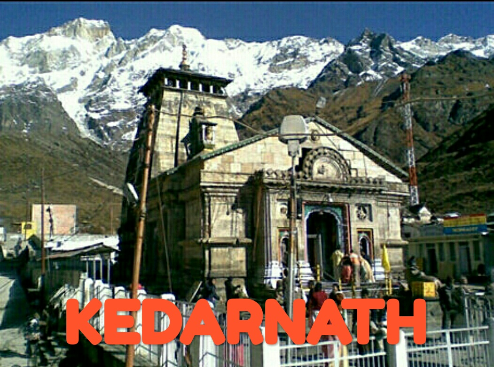
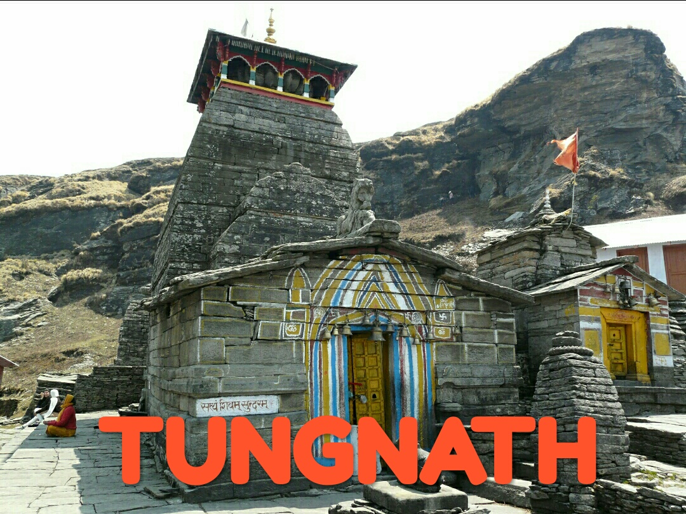
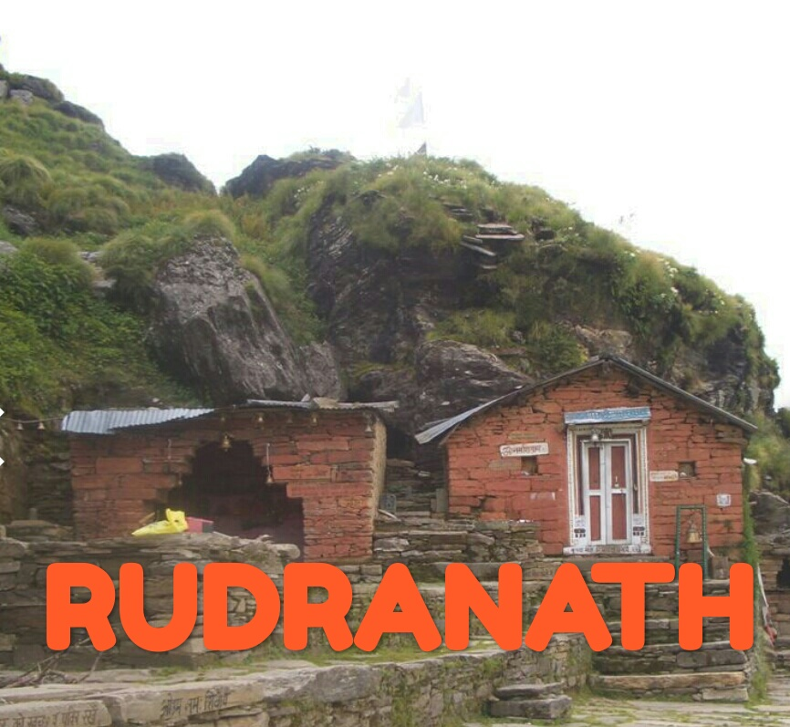
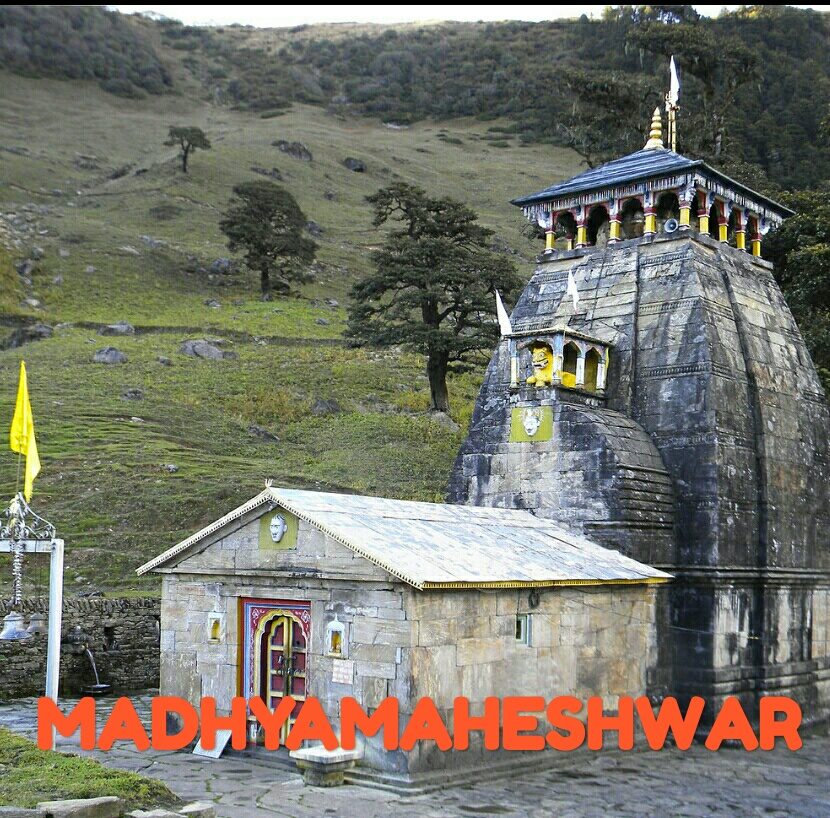
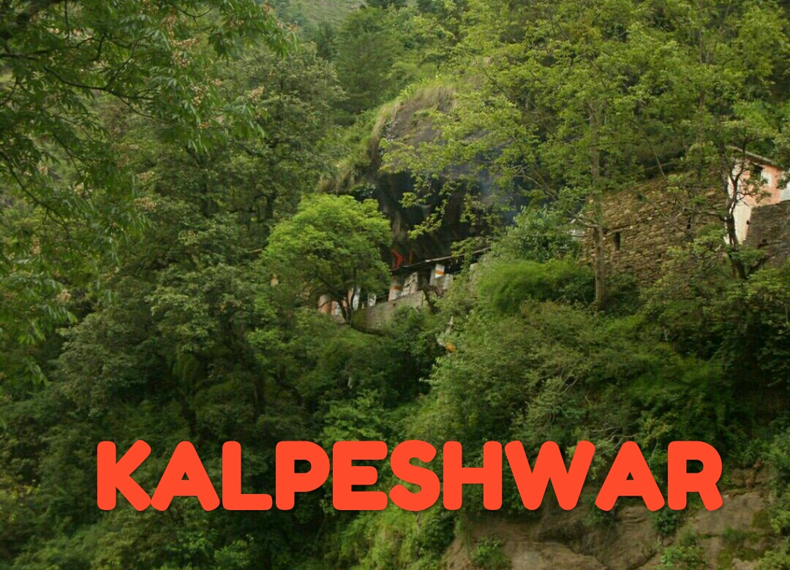

|  |  |  |  |  |
Kedarnath is a town in the Indian state of Uttarakhand and has gained importance because of Kedarnath Temple. It is a nagar panchayat in Rudraprayag district. The most remote of the four Chota Char Dham sites, Kedarnath is located in the Himalayas, about 3,583 m (11,755 ft) above sea level near Chorabari Glacier, the head of river Mandakini, and is flanked by snow-capped peaks. The nearest road head is at Gaurikund.
The town suffered extensive destruction during June 2013 from flash floods caused by torrential rains in Uttarakhand state.
PAGE CONTENTS
Etymology
The name "Kedarnath" means "the lord of the field": it derives from the Sanskrit words kedara ("field") and natha ("lord"). The text Kashi Kedara Mahatmya states that it is so called because "the crop of liberation" grows here.
History
Kedarnath has been a pilgrimage centre since the ancient times, although it is not certain who constructed the original Kedarnath temple and when. A mythological account ascribes the temple's construction to the legendary Pandava brothers mentioned in the Mahabharata. However, the Mahabharata does not mention any place called Kedarnath. One of the earliest references to Kedarnath occurs in the Skanda Purana (c. 7th-8th century), which names Kedara (Kedarnath) as the place where Shiva released the holy water from his matted hair, resulting in the formation of the Ganges river.
According to the hagiographies based on Madhava's Sankshepa-shankara-vijaya, the 8th century philosopher Adi Shankara died at Kedaranatha (Kedarnath); although other hagiographies, based on Anandagiri's Prachina-Shankara-Vijaya, state that he died at Kanchi. The ruins of a monument marking the purported resting place of Shankara are located at Kedarnath. Kedarnath was definitely a prominent pilgrimage centre by the 12th century, when it is mentioned in Kritya-kalpataru written by the Gahadavala minister Bhatta Lakshmidhara.

Location
Kedarnath is located at a distance of 223 km from Rishikesh in Uttarakhand and close to the source of Mandakini river at a height of 3,583 m (11,755 ft) above sea level.[7] The township itself cannot be called attractive, as it is built on a barren stretch of land on the shores of Mandakini river but the surrounding scenery of Himalayas and green pastures makes it a very attractive place for pilgrimage and trekking. Behind the town and Kedarnath temple, stands the majestic Kedarnath peak 6,940 m (22,769 ft), Kedar Dome 6,831 m (22,411 ft) and other peaks of the range.
Demographics
As of 2001 India census, Kedarnath had a population of 479. Males constitute 98% of the population and females 2%. Kedarnath has an average literacy rate of 63%: male literacy is 63%, and female literacy is 36%. In Kedarnath, none of the population is under 6 years of age. The floating population from May to October every year is more than 5000 per day.
Climate
During winter due to heavy snowfall, the Temple is closed and no one stays in Kedarnath. For six months (November to April) the Palki with the utsava murti of Lord Kedarnath is transferred to a place near Guptakashi called Ukhimath. People shift their settlement too from Kedarnath to nearby villages. Around 360 families of Tirtha Purohit of 55 villages and other nearby villages are dependent on Kedarnath for livelihood.
2013 flash floods
On 16 June 2013 at approximately 7:30 p.m., a landslide occurred near Kedarnath Temple with loud thunder followed by gushing of huge amount of waters from Chorabari Tal or Gandhi Tal down Mandakini River at about 8:30 p.m. which washed away everything in its path. On 17 June 2013 at approximately 6:40 a.m., waters rushed down from Chorabari Tal or Gandhi Sarovar bringing along with its flow huge amount of silt, rocks and boulders. A huge boulder got stuck behind Baba Kedarnath Temple, protecting it from the ravages of the flood's fury. The flood water gushed on both sides of the temple destroying everything in its path. Thus in the middle of pilgrimage season, torrential rains, cloud bursts and resulting flash floods nearly destroyed the town of Kedarnath. The town was the worst affected area by the floods. Thousands of people were killed and thousands of others (mostly pilgrims) were reported missing or stranded due to landslides around Kedarnath. Although the surrounding area and compound of the Kedarnathe temple were destroyed, the temple itself survived. The rescue operation resulted in more than 100,000 people being airlifted with the help of mainly the Private Helicopter Operators who began the rescue mission voluntarily without any clear directives from the State Government or the Ministry of Defence. The Indian Army and Indian Air Force helicopters arrived much after the Private Helicopter Operators had already begun the massive air-rescue mission. Dare-devil helicopter pilots, mostly ex-Indian Air Force and Ex-Army Aviation officers flew relentlessly. Late Capt. Unni Krishnan from Prabhatam Aviation & Capt. Bhatnagar from Premair were few such outstanding pilots who landed at the Sh. Kedarnath Ji right-ridge at dusk hours - 1910hrs (almost 35 minutes after 'sunset') to pick-up the 'last' batch of survivors for the day. The NDRF represented by a commandant and another junior officer arrived at the Sh. Kedarnath Ji 'right-ridge' unprepared with a malfunctioning satellite phone. They, later next-day, however, brought in more men and supplies. The first Indian Army officer to arrive at the Sh. Kedarnath Ji 'right-ridge' was a Captain from the Assam Rifles regiment. He single-handedly displayed exemplary courage in rescuing many survivors by climbing up steep slopes and fractures along the Rambara ridge-line. His cool demeanor and stable poise, even under such intense and perilous circumstances, are a proof of the impeccable training & discipline imbibed within him. The Indian Army later launched a massive rescue effort with thousands of its brave-heart men and vital equipment. The Indo-Tibetan Border Police and the reserve battalions of the Uttarakhand Police displayed outstanding courage in the rescue mission. An Eurocopter AS350 B3 helicopter, each, of the private helicopter operators - Prabhatam Aviation & Simm Samm Aviation, were lost during the rescue mission without any reported casualties. An Indian Air Force helicopter (Mi 17) also crashed during this exercise killing all 20 people on board (all of them were soldiers involved in relief and rescue work). The Air Force dropped logs to build pyres for mass cremations of the victims. It was reported that previously uncollected bodies were still being found one year after the tragedy.
Legend
The epic legend narrated on the creation of the Panch Kedar temples is that Pandavas of Mahabharata epic history, while chasing Lord Shiva to seek his pardon for the fratricidal sins committed by them during the Kurukshetra war, realized that Shiva, in order to distance himself from the Pandavas, took the incognito form of a bull. But when this form of Shiva was discerned by Bhima, the second of the Pandava brothers, tried to hold on to the bull's tail and hind legs. But the bull vanished underground at Guptakashi. Subsequently, it reappeared in five different forms: His hump appeared at Kedarnath, his bahu (arm) was spotted at Tungnath, his head surfaced at Rudranath, the stomach and navel were traced at Madhyamaheswar and his jata (tress) was divined at Kalpeshwar. Another legend states that this place was much preferred by sages of folklore for meditation. Particular mention is made of sage Arghya who through his austere penance created Urvashi, the famous apsara (nymph) at this place. Durvasa, an ancient sage, son of Atri and Anasuya, considered an incarnation of Shiva, known for his short temper did penance and meditated under the Kalpavriksha, the wish fulfilling divine tree in the precincts of the temple.[3] Further, it is said that Durvasa had given Kunti, mother of Pandavas, a boon that "she could invoke any of the forces of nature and they would appear before her and grant whatever she desired". Once, when Pandavas, were in exile here, in order to test them Durvasa visited them along with his disciples and desired to be dined by them. Unfortunately, there was no food available within the house to feed the surprise guests. Draupadi, wife of Pandavas, sought Lord Krishna's help. Krishna materialised on the scene and solved the problem.